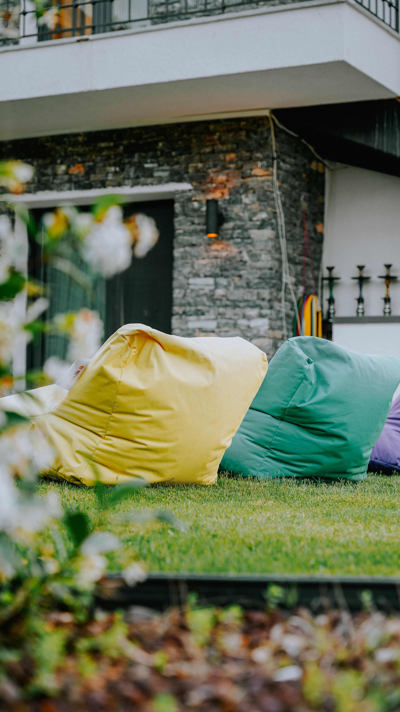

In This Article
- Introduction
- Observe Natural and Artificial Light
- Identify Fixed Materials
- Understand Undertones
- Build a Coherent Palette
- Use Proportion Instead of Rigid Rules
- Adapt Color to Each Room
- Test Paint Before Committing
- Coordinate Open and Connected Spaces
- Consider Finish and Maintenance
- Use Dark and Strong Colors Carefully
- Plan a Practical Selection Process
- Frequently Asked Questions
- Conclusion
Introduction
Choosing colors for a home is easier when the decision begins with the real space rather than a trend chart. Light, flooring, wood, stone, furniture, room size, and daily use all influence how a color appears and whether the palette feels balanced.
A useful palette does not require every room to look identical. The objective is continuity: repeated tones, related undertones, and intentional transitions that allow each room to have its own character while still belonging to the same home.
Observe Natural and Artificial Light
Study each room in the morning, afternoon, and evening. A wall that appears warm in direct sunlight may look cooler or duller when the sun moves away.
Orientation, window size, exterior reflections, curtains, and nearby buildings can all affect natural light. Do not assume that a paint color seen in another house will behave the same way in yours.
Artificial lighting also changes perception. Compare samples under the lamps you normally use at night, not only under store lighting or daylight.
Identify Fixed Materials
Before choosing wall colors, list the surfaces that are likely to remain: flooring, countertops, tiles, stone, large furniture, built-ins, and significant wood finishes. These elements already form part of the palette.
Place paint samples next to those materials rather than evaluating them against an empty white wall. A beige that looks neutral alone may reveal a pink, yellow, or gray tendency beside the floor.
If several fixed materials compete with one another, a quieter wall color can help connect them instead of adding another strong element.
Understand Undertones
Two colors that look almost identical on a small card can behave very differently in a room because of undertones. Whites may lean yellow, gray, blue, green, or pink, and similar variations occur in beige, gray, and other neutrals.
Compare several samples side by side and against the materials that will remain. The differences often become clearer through comparison.
Undertones do not need to match perfectly, but obvious conflicts can make a palette feel accidental. Repeating related warm or cool tendencies can create continuity.
Build a Coherent Palette
Start with a dominant neutral or foundational color, then choose a small number of supporting tones and accents. This creates enough structure to make later decisions easier.
Repeat selected colors in different rooms through walls, textiles, furniture, art, or smaller details. Repetition does not mean using the same amount everywhere.
Keep a record of paint names, codes, finishes, and samples. This is useful when touching up a wall or extending the palette to another room later.
Use Proportion Instead of Rigid Rules
Popular decorating formulas can be useful as a starting point, but they are not laws. The amount of each color should respond to the room, architecture, furniture, and desired emphasis.
Large surfaces naturally have more visual weight. A wall color may dominate even when it is quiet, while a vivid accent can be effective in a much smaller quantity.
Choose one or two main focal points rather than making every surface compete for attention. Visual hierarchy usually creates a calmer result.
Adapt Color to Each Room
Bedrooms, living rooms, kitchens, work areas, and hallways have different functions and light conditions. A color should support the room's use rather than follow a universal recommendation.
In a small room, light colors can reflect more light, but dark colors are not automatically forbidden. A deeper tone can create intimacy when the lighting and furnishings support it.
Busy family spaces may benefit from finishes and colors that are practical to maintain. Consider marks, cleaning, and durability alongside appearance.

Test Paint Before Committing
Small paint chips are useful for narrowing choices but can be misleading. Test the shortlisted colors on a larger movable sample board or an appropriate section of wall.
Observe each sample through different times of day and under artificial light. Place it near the floor, furniture, trim, and curtains so you can judge relationships.
Do not make the final decision immediately after applying wet paint. Allow the sample to dry according to the manufacturer's instructions before evaluating the color.
Coordinate Open and Connected Spaces
When rooms can be seen from one another, consider the view through doorways and across open-plan areas. Colors do not have to match, but transitions should feel intentional.
A shared neutral, repeated wood tone, or recurring accent color can connect spaces that use different wall colors.
Walk through the home while holding samples. A palette that works in isolated photographs may feel abrupt when experienced as a sequence.
Consider Finish and Maintenance
Paint finish affects both appearance and performance. Sheen can change how light reflects from a surface and can make imperfections more noticeable.
Choose finishes according to the surface, room conditions, cleaning needs, and paint manufacturer's recommendations. Kitchens, bathrooms, trim, and low-traffic bedrooms may have different requirements.

Keep leftover labeled paint when practical and store it according to product guidance. Accurate records make future touch-ups easier even if the original container is no longer usable.
Use Dark and Strong Colors Carefully
Strong colors can add character, but their effect depends on area and context. Test them on a sufficiently large sample because saturated shades can feel more intense across an entire wall.
Balance a strong color with quieter surrounding materials if you want it to remain the focal point. Repeating a small amount elsewhere can help it feel connected.
Dark walls can work well with appropriate lighting and contrast. Consider how trim, ceilings, furniture, and natural light will interact with the deeper surface.
Plan a Practical Selection Process
Create a shortlist instead of comparing dozens of colors indefinitely. Eliminate options that conflict with fixed materials or look poor under the room's actual light.
Buy samples of the strongest candidates, label them clearly, and observe them for several days. Photographing the room can help reveal which color dominates or conflicts, although photographs should not replace viewing the sample in person.
After choosing, calculate paint needs according to the manufacturer's coverage information and the surface condition. Allow for the number of coats recommended for the product and color change.
Avoid Common Color Mistakes
Do not select paint solely from a phone or computer screen. Displays vary, and digital images cannot reliably reproduce the exact color or sheen.
Avoid choosing the wall color before considering flooring, countertops, and other fixed elements. Those materials are more difficult and expensive to change later.
Do not judge a sample under only one light condition. A balanced choice should be acceptable during the times when the room is normally used.
Finally, avoid forcing every room to use the same color. Continuity can come from undertones, repeated materials, and accents while individual spaces retain variety.
Frequently Asked Questions
Should the whole house use the same color palette?
Not necessarily. A limited group of related colors can create continuity while allowing different rooms to use different dominant tones.
Why does paint look different at home than in the store?
Lighting, surrounding materials, surface texture, and nearby colors all affect perception. This is why testing in the actual room is important.
How many paint colors should I test?
There is no required number. Narrow the options first, then test a manageable shortlist large enough to compare under the room's real conditions.
Can I use a dark color in a small room?
Yes. Room size alone does not prohibit dark colors. Evaluate light, contrast, function, and the atmosphere you want before deciding.
Keep Future Changes in Mind
A color palette should leave room for the home to evolve. Furniture, textiles, art, and family needs can change, so a flexible foundation often lasts longer than a scheme built around one temporary trend.
When replacing an item later, use your saved samples and paint records to check how the new material relates to the existing palette rather than starting the entire color plan again.
Keep Future Changes in Mind
A color palette should leave room for the home to evolve. Furniture, textiles, art, and family needs can change, so a flexible foundation often lasts longer than a scheme built around one temporary trend.
When replacing an item later, use your saved samples and paint records to check how the new material relates to the existing palette rather than starting the entire color plan again.
Keep Future Changes in Mind
A color palette should leave room for the home to evolve. Furniture, textiles, art, and family needs can change, so a flexible foundation often lasts longer than a scheme built around one temporary trend.
When replacing an item later, use your saved samples and paint records to check how the new material relates to the existing palette rather than starting the entire color plan again.
Keep Future Changes in Mind
A color palette should leave room for the home to evolve. Furniture, textiles, art, and family needs can change, so a flexible foundation often lasts longer than a scheme built around one temporary trend.
When replacing an item later, use your saved samples and paint records to check how the new material relates to the existing palette rather than starting the entire color plan again.
Keep Future Changes in Mind
A color palette should leave room for the home to evolve. Furniture, textiles, art, and family needs can change, so a flexible foundation often lasts longer than a scheme built around one temporary trend.
When replacing an item later, use your saved samples and paint records to check how the new material relates to the existing palette rather than starting the entire color plan again.
Keep Future Changes in Mind
A color palette should leave room for the home to evolve. Furniture, textiles, art, and family needs can change, so a flexible foundation often lasts longer than a scheme built around one temporary trend.
When replacing an item later, use your saved samples and paint records to check how the new material relates to the existing palette rather than starting the entire color plan again.
Keep Future Changes in Mind
A color palette should leave room for the home to evolve. Furniture, textiles, art, and family needs can change, so a flexible foundation often lasts longer than a scheme built around one temporary trend.
When replacing an item later, use your saved samples and paint records to check how the new material relates to the existing palette rather than starting the entire color plan again.
Keep Future Changes in Mind
A color palette should leave room for the home to evolve. Furniture, textiles, art, and family needs can change, so a flexible foundation often lasts longer than a scheme built around one temporary trend.
When replacing an item later, use your saved samples and paint records to check how the new material relates to the existing palette rather than starting the entire color plan again.
Keep Future Changes in Mind
A color palette should leave room for the home to evolve. Furniture, textiles, art, and family needs can change, so a flexible foundation often lasts longer than a scheme built around one temporary trend.
When replacing an item later, use your saved samples and paint records to check how the new material relates to the existing palette rather than starting the entire color plan again.
Keep Future Changes in Mind
A color palette should leave room for the home to evolve. Furniture, textiles, art, and family needs can change, so a flexible foundation often lasts longer than a scheme built around one temporary trend.
When replacing an item later, use your saved samples and paint records to check how the new material relates to the existing palette rather than starting the entire color plan again.
Conclusion
An balanced home palette begins with observation. Study light, fixed materials, undertones, and the way connected rooms are seen together before selecting paint.
Test colors at useful scale, evaluate them at different times of day, and keep the final palette limited enough to create continuity. Thoughtful color choices are more durable than decisions based only on trends or a small sample card.